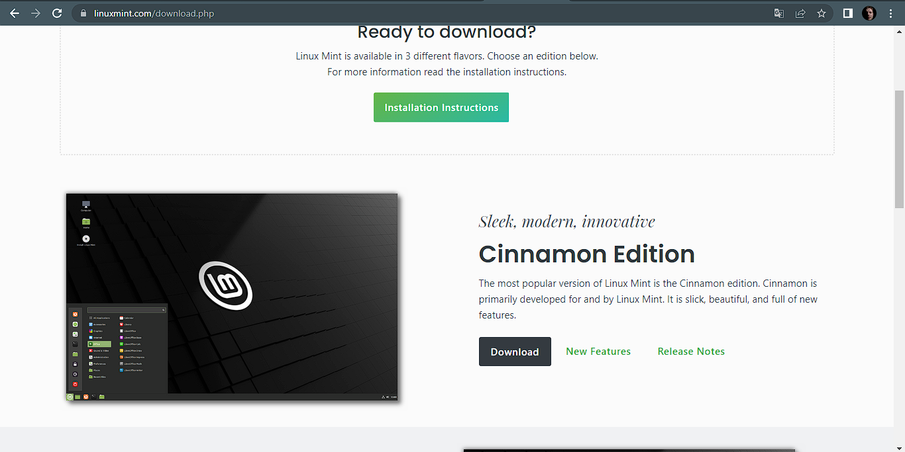
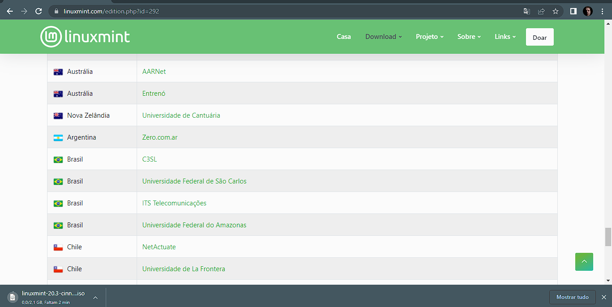

Como Baixar a ISO do Linux
Aqui ensino como baixar a ISO do Linux, estarei utilizando a distribuição Linux Mint Cinnamon 20.3 diretamente do site oficial para esse tutorial, independente do Sistema Operacinal que você estiver utilizando o processo será o mesmo.
-
No site do Linux Mint clique em "Download" e você será redirecionado para outra página.

-
Aqui, desça a página e ache o Brasil na lista e clique em "ITS Telecomunicações" e espere o download ser concluído.

- Com o download feito, basta colocá-lo na mídia bootável feita com o Ventoy.
Agora você pode baixar a ISO do Windows caso esteja no Linux ou ISO do Windows caso esteja no Windows e colocar no sua mídia bootável junto com o seu Linux.